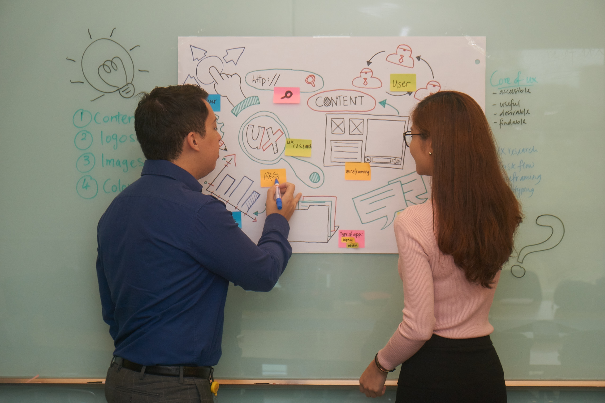
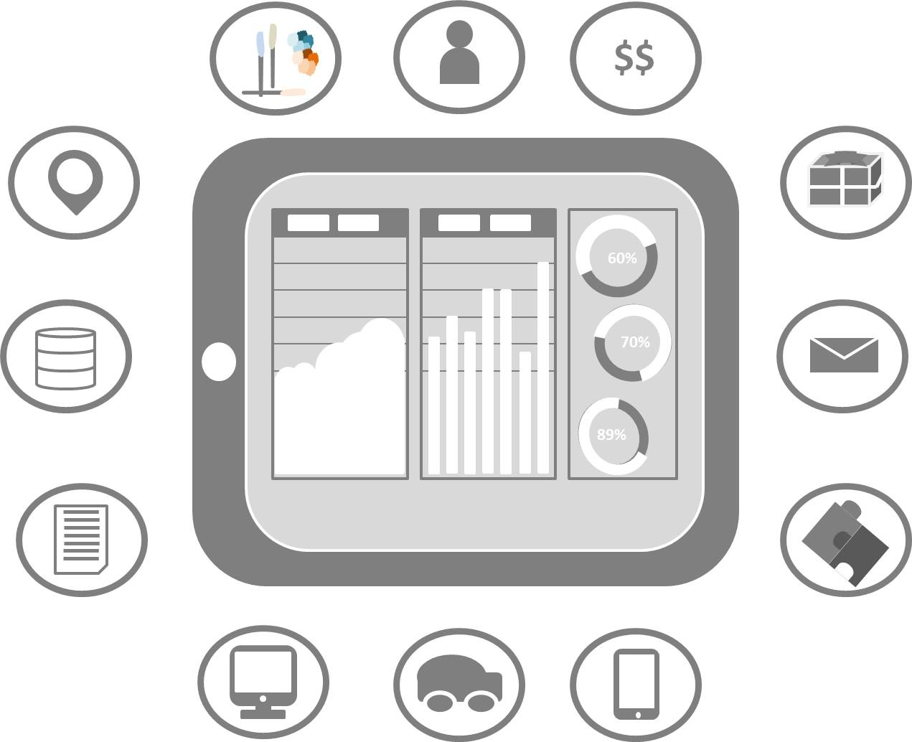

So you think you know your users? - The underlying principle of creating the user experience is first, to know the users.
User Research
The aim of this research is to identify core problems from user perspective and discover the customer motivations and end user goals.
Usability inspection, also known as expert reviews, is to be conducted by the UX consultants in evaluating the application in comparison to the industry standards today and provide summary of recommendations and best practices to be adopted.
With the findings from User Research phase, various personas will be derived to represent each market segment. At the same time, start the analysis on the business process with your key stakeholders and identify the usability problems from the application in fulfilling the user needs and reaching the business goals.
Replenish your sticky notes. We call this the “War Room”.
Now is the time to reach a consensus.
The problem statements and user goals defined are mapped to the relevant usability metrics focusing on the key areas of effectiveness, efficiency and satisfaction. Benchmark your data (if the product already exists) for each usability metrics which are applicable either through System Usability Scale (SUS) questionnaire, web analytics or usability testing. Present your statistics to the stakeholders with a forecasted return on investment (ROI) using the ROI calculator, based on the agreed business goals.
Align the metrics closely with the business goals derived from the Business Requirement Statements (BRS) and based on these goals, provide a forecast on the return on investment (ROI) using the ROI calculator.
